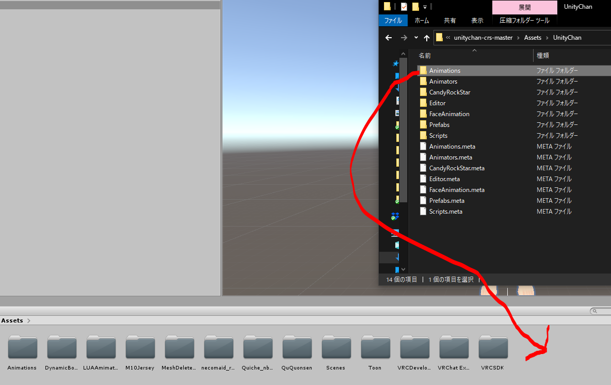
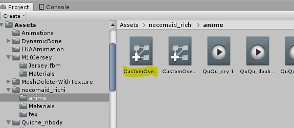
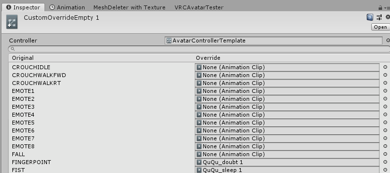
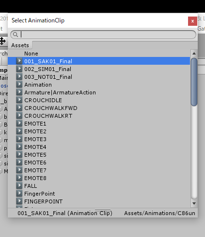
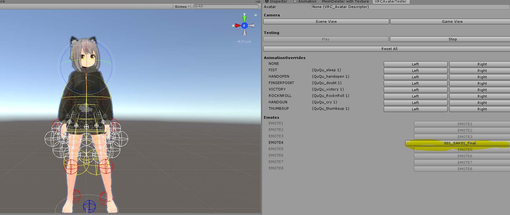

今回は、Unity上でVRChatアバターの簡易テストを行う方法を紹介したいと思います 😎
概要
UnityちゃんのダンスをEmoteに設定し、VRCDeveloperToolのVRCAvatarTesterで再生する。
準備するもの
- VRCSDK2
- VRCDeveloperTool
- ユニティちゃんライブステージ！ -Candy Rock Star-
- こちらからダウンロード
- つぶしてもいいEmoteをひとつ
方法
まずはテストしたいアバターの入ったUnityプロジェクトに、VRCSDK2とVRCDeveloperToolをimportします。
次に「ユニティちゃんライブステージ！ -Candy Rock Star-」のzipからunitychan-crs-master\Assets\UnityChan\AnimationsをProjectウィンドウにD&Dします。

Hierarchyウィンドウのアバターを右クリックし、Inspectorの’Custom Standing Anims’をクリックします。

するとProjectウィンドウに、設定されているアニメーションオーバーライド（ここではCustomOverideEmpty1）がハイライトされるので、それをクリックします。

InspectorにEMOTE1～8が表示されるので、好きなものを選び（ここではEmote4）、その右側にあるドットをクリック。

001_SAK01_Finalを選択し、選んだEmoteに設定します。

その後VRCDeveloperToolのVRCAvatarTesterウィンドウで、Playします。
（詳しいVRCAvatarTesterの使い方はこちらを参照ください 🙇）

これでユニティちゃん踊りをアバターがやってくれるので、チェックします。
ありがとう！
この記事はこちらから修正リクエストを送ることができます。
VRChatのアバターをローカルで簡易テストする - github
ゴミ箱ボタンの左にある、鉛筆ボタンを押してね！